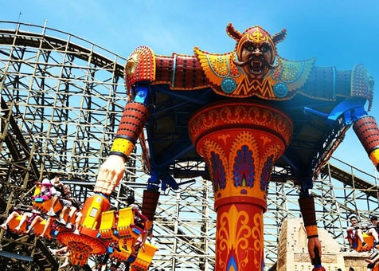

<div class="ly-box ly-sr">
    <div class="sr-tx sr3">
        <a class="close"><i></i></a>
        <div class="sr-imgs u-slick">
            <div class="item pic"></div>
        </div>
        <div class="txts">
            <p class="ti fwb">沙漠之鹰</p>
            <div class="tx">可曾期盼一双翅膀，翱翔天际俯瞰大地，穿梭于风中自在滑行？沙漠之鹰，就是你的翅膀！跃步起飞，逆风振翅，逐渐远离地面，攀入云端，时而遭遇气流颠簸，时而起伏盘旋，飞翔的记忆就此映入你的心里。</div>
        </div>
    </div>
    <script>
        $('.sr-imgs').slick();
    </script>
</div>